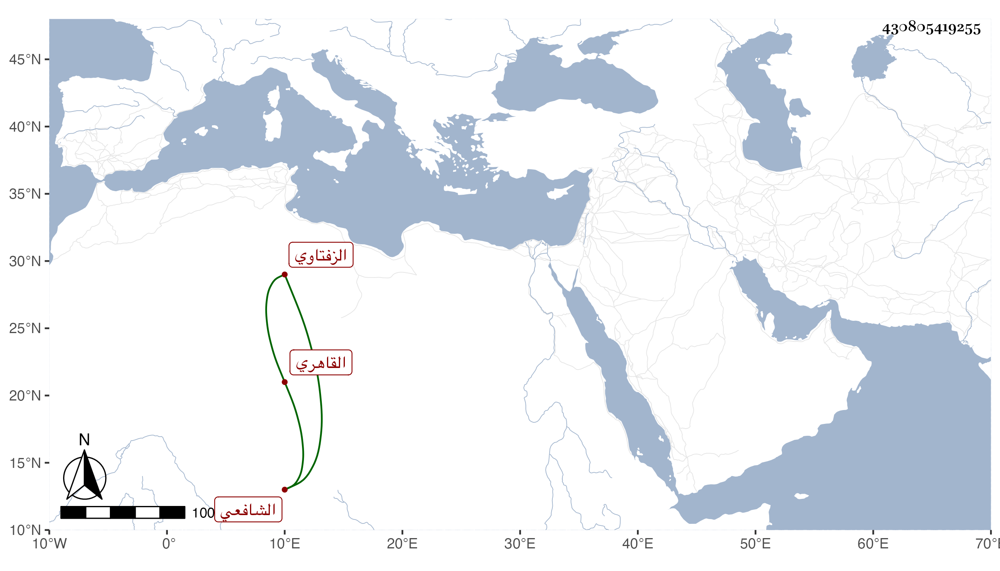

0902Sakhawi.DawLamic.ITO20230111-ara1.EIS1600.430805419255
Biography ID: 430805419255
663
محمد بن عمر بن عبد الرحمن الشمس أبو الخير الزفتاوي القاهري الشافعي . حفظ القرآن واشتغل ولازم الشرف السبكي في الفقه وكذا ابن المجدي فيه وفي الفرائض والحساب وغيرها وحضر دروس القاياتي وغيره بل أخذ عن شيخنا وتميز بذكائه في الفضيلة ودرس في مسجد خان الخليلي برغبة أبي يزيد الرومي له عنه وتكسب بالشهادة وارتقى في الشطرنج وذكر به مع عقل وسكون . مات قريب الستين تقريبا وأظنه جاز الخمسين وخلفه في التدريس الولوي الأسيوطي رحمه الله .
